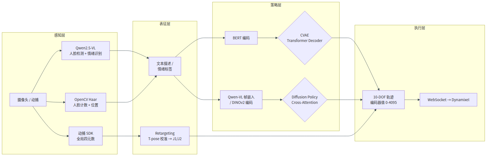
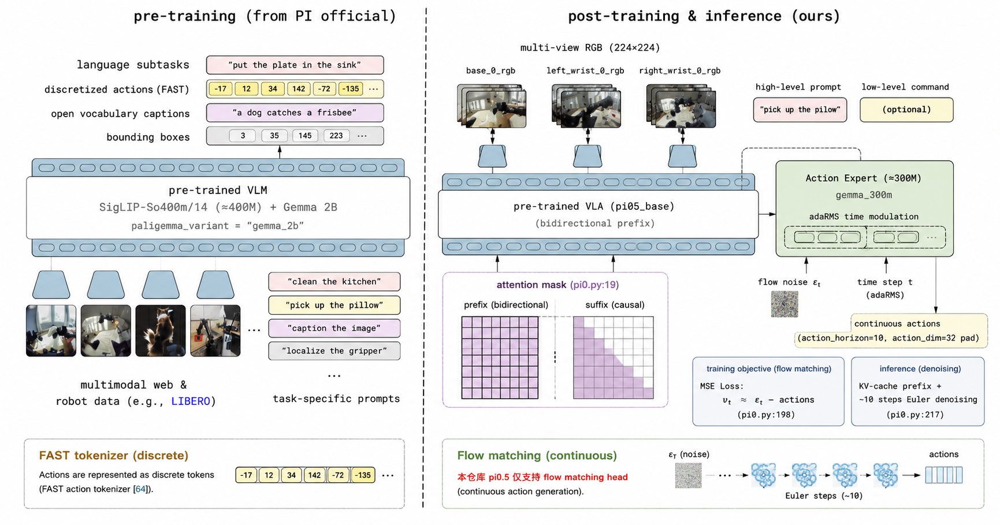
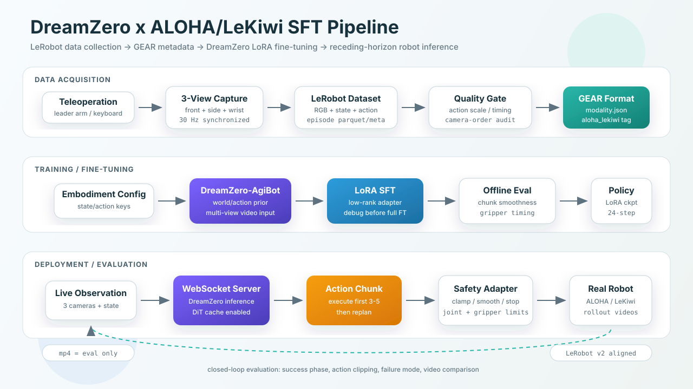
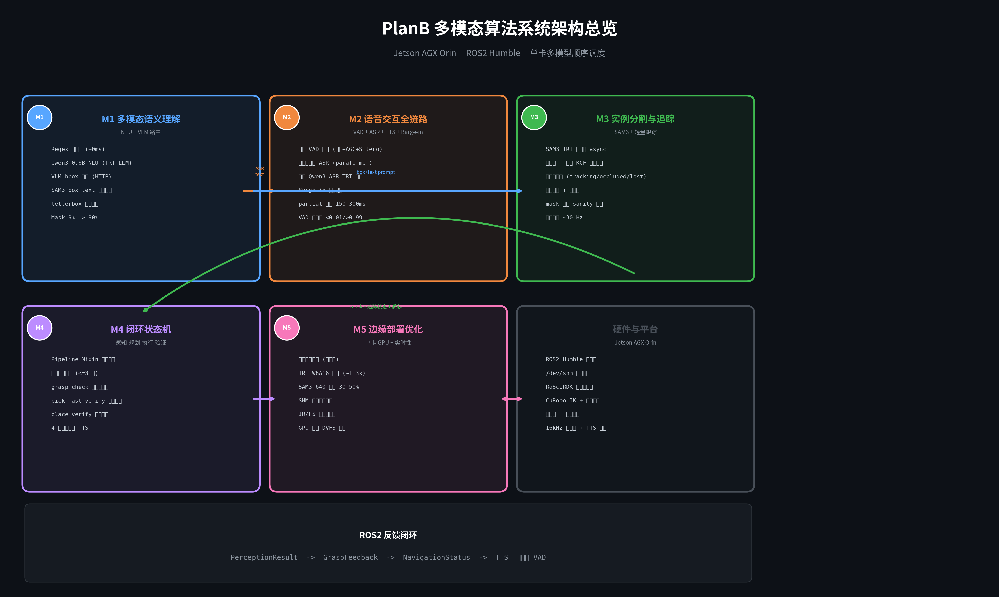

I am a M.Sc. student at The Chinese University of Hong Kong (CUHK). My research interests lie in embodied AI, multimodal perception, and robot learning, with a focus on vision-language-action models and end-to-end robot manipulation systems.
I have hands-on experience building full-stack robot perception pipelines (ASR/NLU/VLM/SAM) and fine-tuning large-scale VLA models (pi0.5) for robotic control. I am also experienced in designing multimodal interaction systems for humanoid robots.
I am actively looking for research / industry opportunities in embodied AI and robot learning. Feel free to reach out!
News
| Jun 2026 | Personal academic homepage is online! |
| May 2026 | Completed the full-chain multimodal perception stack (ASR + VAD + TTS + NLU + VLM) and presented at the internship defense. |
| May 2026 | Achieved 94.2% mean success rate on LIBERO benchmark with pi0.5 LoRA fine-tuning (+2.0 pp over official baseline). |
| Apr 2026 | Built PLAN-A end-to-end multimodal robot interaction system: voice + vision + 10-DOF manipulation, achieving 2.5-5.5s closed-loop latency. |
Selected Projects

PLAN-A: End-to-End Multimodal Robot Interaction System
Algorithm Intern Project, 2026
Designed and implemented an end-to-end multimodal human–robot interaction system for a 10-DOF social robot, spanning perception, representation, policy, and execution. Perception layer: cascaded Qwen2.5-VL-7B + OpenCV Haar face detection with emotion recognition (7 classes → 6 robot states), plus VDMocap quaternion input. Retargeting: T-pose calibration pipeline using forward kinematics + scipy.optimize.least_squares numerical IK, mapping global quaternions to encoder values [0, 4095] with zero-position accuracy of 2048 ± 3. Dual policy routes: (1) Text-to-Action CVAE — BERT-base-chinese encoding + Transformer Decoder (2L-4H, latent 64d), parallel/autoregressive dual decoding with dynamic stopping, ∼0.5s inference; (2) Image-Conditioned Diffusion Policy — DINOv2/Qwen-VL condition encoding + 6-layer Cross-Attention + DDIM 1000-step with v-prediction, self-conditioning (p=0.9), and min-SNR (γ=5) weighting. Introduced offline Qwen-VL embedding precomputation achieving ∼9× training speedup (3h → 20min/epoch). Execution: WebSocket + Dynamixel real-time control at 10 FPS with mutex-based concurrent isolation. Closed-loop validated on 194 episodes across 3 action categories, achieving 2.5–5.5s end-to-end latency. Also developed a data quality diagnosis methodology that identified and resolved biased training samples.

π0.5 VLA Fine-Tuning on LIBERO Benchmark
Algorithm Intern Project, 2026
Fine-tuned Physical Intelligence’s π0.5 Vision-Language-Action model on the LIBERO benchmark using LoRA on a single RTX 4090. Designed a freeze-filter strategy matrix spanning 2.6M, 18M, and 305M trainable parameters; fixed action-expert LoRA leakage, norm_stats reuse, and checkpoint-aware evaluation logging. Achieved 94.2% mean success rate across 2000 episodes (+2.0 pp over official, +18.2 pp over OpenVLA-7B), with Long-10 reaching 88.8%.

ALOHA/LeKiwi SFT Full Episode: DreamZero VLA Reproduction
Robot Learning Project, 2026
Built a reproduction-oriented VLA pipeline for an ALOHA/LeKiwi tabletop manipulation setup, covering LeRobot data collection design, GEAR-style metadata conversion, DreamZero embodiment registration, LoRA fine-tuning protocol, and WebSocket-based action-chunk inference. The project emphasizes practical robot-learning details often missed in paper-level reproductions: 3-view camera-order validation, state/action schema audit, gripper normalization, receding-horizon execution, safety clamping, and rollout-video based evaluation.

PLAN-B: Multimodal Perception & Closed-Loop Grasping for Humanoid Robot
Algorithm Intern Project · Jetson AGX Orin, 2026
Built a full-stack multimodal perception & grasping pipeline for a humanoid robot on Jetson AGX Orin: 3-tier cascaded VAD boosting far-field Silero hit rate from 0% → 92%; dual-path NLU + VLM-guided SAM3 segmentation raising mask success from 9% → ≥90%; 8-state closed-loop FSM with 7 guard mechanisms and 3D multi-feature grasp verification (median/P25/frac voting). Diagnosed and fixed a P0 cascading bug via 7-step root-cause audit.
TRO-1B: Large-Scale Robot Manipulation Model
Research Project, 2026
Contributed to a 1B-parameter robot manipulation model with multi-level evaluation. Implemented IK retargeting via Pyroki, multi-machine distributed training, and simulation-based validation pipeline using Isaac Gym.